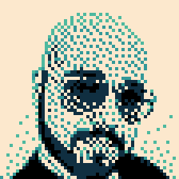

OMAR GOLINELLI

Hi, I’m Omar.
I design board games and video games, and I care most about the metaphor a game is built on: the object you hold, the medium it arrives in, the story it tells by how it plays.
I grew up on the Game Boy and the GBA, and Japanese games still shape most of what I make. Everything in this room is something I made. Pick it up.
GAME DESIGN · BOARD GAMES · RPGS · UI/UX · PIXEL ART · STRATEGY
- PC DISC
Holon
ホロンHolon, the RS-PK simulator.
- PC DISC
SpaceRim
スペースリムSpaceRim, a game jam game.
- GAME BOY ADVANCE CARTRIDGE
Project Minamoto
プロジェクト・ミナモトA Pokémon fan game that re-reads Generation 1 on the GBA.
- GAME BOY CARTRIDGE
Galactic News
ギャラクティック・ニュースA GBJAM 11 entry for the Game Boy, made in Godot: four colours, 160 × 144 pixels.
- NINTENDO DS GAME CARD
Legends Arise
レジェンズ・アライズProject Legends Arise, on a DS game card.
- CASSETTE
Crossfader
クロスフェーダーA game jam game about cassettes: a music puzzle in three views. Flip the side, remix the song.
- RULEBOOK
PTCG Cube
キューブA cube format for the Pokémon TCG, with Roguelike and Co-op modes. This is its rulebook.
- ARCHIVED DISC
Haunt Record
ホーント・レコードA dungeon crawler where the player is complicit. Graphics with Edoardo Zuliani.
Models: “Desktop Computer” by Mark, CC BY 4.0 · “GameBoy DMG-01” by Let's Do 3D, CC BY 4.0 · “Gameboy Advance” by Rafael Freitas, CC BY 4.0 · “Nintendo DS” by solal.sblt, CC BY 4.0 · “GameBoy Cartridge” by Let's Do 3D, CC BY 4.0 · “Gameboy Advance Cartridge” by Vxcl, CC BY 4.0 · “Nintendo Ds cartridge (preset)” by littlengvfx, CC BY 4.0. Jewel cases, CD tray and envelope are drawn in code; all label and screen art, the Crossfader models and the Cube rulebook are Omar’s own work.